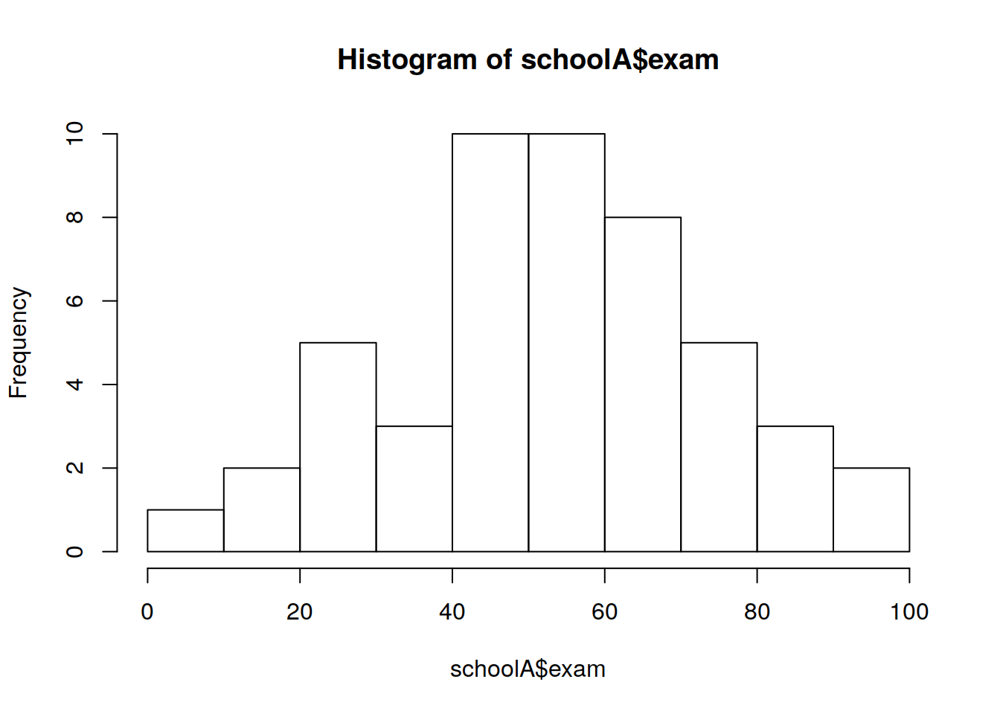
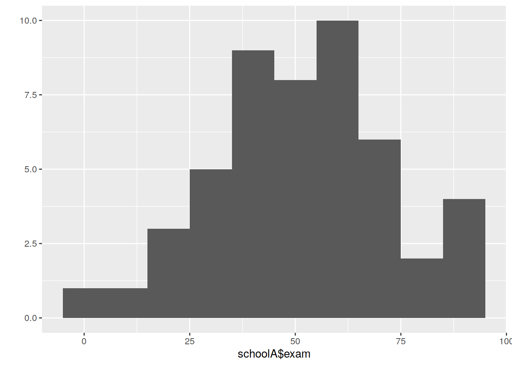
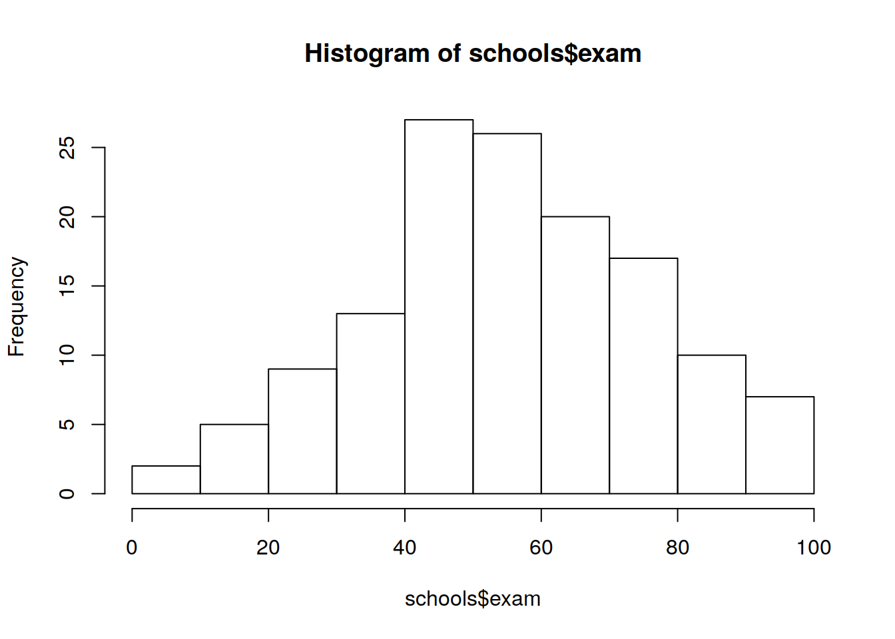

Chapter 7 Lab 7
This week we’ll be merging data collected from a number of sources before running a correlation and a linear regression. You should end up knowing a bit more about data manipulation, as well as about running statistical tests. As always, create a new project in RStudio.
7.1 Merging and missing values

Task: First of all, generate a data frame with IQ measurements for 5 people (Amy, Jill, Kim, Dave, and Earl). IQ should be a normally distributed variable with \(Mean = 100\) and \(SD = 15\).
iq.f <- data.frame(name = factor(c('Amy', 'Jill', 'Kim', 'Dave', 'Earl')),
iq = rnorm(n = 5, mean = 100, sd = 15))## name iq
## 1 Amy 126.82867
## 2 Jill 93.30838
## 3 Kim 86.73938
## 4 Dave 102.51666
## 5 Earl 110.01594Task: Next, create another data frame with height measurements for 5 people (Jill, Dave, Earl, Fred, and Jen).
ht.f <- data.frame(name = factor(c('Jill', 'Dave', 'Earl', 'Fred', 'Jen')),
height = rnorm(5, 170, 10))## name height
## 1 Jill 161.3152
## 2 Dave 174.6044
## 3 Earl 174.0020
## 4 Fred 176.4006
## 5 Jen 164.8891
You’ll notice that the data frames you’ve created contain some overlapping information. If you wanted to test for a relationship between IQ and height it would be useful to create one merged data frame. The R function for this is merge().
Task: Try the following commands.
merge(iq.f, ht.f)## name iq height
## 1 Dave 102.51666 174.6044
## 2 Earl 110.01594 174.0020
## 3 Jill 93.30838 161.3152merge(iq.f, ht.f, all = T)## name iq height
## 1 Amy 126.82867 NA
## 2 Dave 102.51666 174.6044
## 3 Earl 110.01594 174.0020
## 4 Jill 93.30838 161.3152
## 5 Kim 86.73938 NA
## 6 Fred NA 176.4006
## 7 Jen NA 164.8891What’s the difference between these two commands? What would you do if the columns in each data frame had different names? (Look at ?merge).
Task: Now create a new merged data frame with no missing values for IQ. Hint: Look at the all.x argument in ?merge.
new.f <- merge(iq.f, ht.f, all.x = T)
new.f## name iq height
## 1 Amy 126.82867 NA
## 2 Dave 102.51666 174.6044
## 3 Earl 110.01594 174.0020
## 4 Jill 93.30838 161.3152
## 5 Kim 86.73938 NATask: Calculate the mean of the IQ column. Revision: These two commands do the same thing (why?)
mean(new.f$iq)## [1] 103.8818mean(new.f[ ,2])## [1] 103.8818Task: Now calculate the mean height.
mean(new.f$height)## [1] NA
7.1.1 Missing Values
mean(new.f$height) doesn’t give you a mean; instead it returns NA. If you completed last week’s worksheet you will have encountered NA values and perhaps learned to deal with them. The fact that R returns NA rather than just ignoring any missing values may seem odd at first, but in fact it’s based on an important principle: You should know that there are missing values, and tell R. If it automatically dealt with missing values that you didn’t know about, you could end up with misleading results.
For functions (like mean(), sd(), etc.), the only way to get R to ignore NAs is as follows (na.rm means “NA remove”).
mean(new.f$height, na.rm = T)## [1] 169.9739For functions like lm(), which we’ll see below, an argument na.action is set to na.omit to remove missing values.
7.2 Writing a function
You may have come across writing functions before, and you have learnt about logical subsetting (where items in a vector or matrix are selected according to the logical values T or F). Can we put these together here?
Write a function called outliers() to test whether observed values are greater than, or less than, x standard deviations from the mean (where x is a value passed to the function). You should use a template something like the following.
outliers <- function(obs, x = 2.5) {
# code goes here
}Tip: Your function takes two values: obs (a vector or matrix of observations), and x, as above. x = 2.5 passes a default value to x, so that, if you don’t specify a value, the default of 2.5 will be used. This means that you can run outliers(vec), which would use the default value; or you could run outliers(vec, 2) if you wanted to use 2 sds instead.
Task: Now write the code to complete the function.
Hint: Suppose you have a matrix mat. Code that replace elements in mat that are more than 2.5 sds above the mean with NAs could look something like this: mat[mat > mean(mat) + 2.5 * sd(mat)] <- NA.
## one possible solution
outliers <- function(obs, x = 2.5) {
# the following line returns TRUE if outlier, FALSE otherwise (for each element of 'obs')
return(abs(obs - mean(obs, na.rm = T)) > (sd(obs, na.rm = T) * x))
}Here, you’re being asked to produce a function that does something similar to the code inside the [] above. You want to use x rather than 2.5 so that the number of standard deviations can be specified. You will need to take into account that your input could include NAs.
You also need to think about detecting values that are ‘x’ standard deviations below the mean as well.
Pro tip: A neat solution to this problem might involve using the abs() function which converts values to their absolute value. See ?abs, and look here for more on what an absolute value is.
Task: Test your outliers function with the following code: Does it correctly identify the 2 outliers?
vec <- rnorm(20, 100, 15)
vec[sample(length(vec), 2)] <- 250 # create two outliers at random
vec # inspect vector to find outliers## [1] 89.22605 119.27710 83.13218 99.03670 75.09153 103.36543 102.95576
## [8] 130.21001 96.07631 250.00000 250.00000 113.37671 111.64968 114.56312
## [15] 103.16879 112.40882 112.67822 74.78100 134.96395 91.31800which(outliers(vec)) # check outliers function## [1] 10 117.3 Some data manipulation
The aim of this exercise is for you to load some data, get it into a suitable format for analysis, and perform a correlation, and a linear regression.
Note: Most of this exercise is about getting data into shape before you do the stats!
Task: Download the data from the LEARN (lab7.Rdata), and load it into R.
Tip: This data is in R format, not .csv (because it contains several data frames). Save it into your project folder. Use the command below to load it into R.
load('data/lab7.Rdata') # if your data is in your project folderTip: The first thing you should do is look at the Environment tab in Rstudio (top right), or type ls(), to find out what new objects you’ve loaded.
Pro tip: ls() returns a list of all the objects (variables and functions) in your workspace. That means it’s very useful if you want to delete everything and start again: You can use rm(list = ls()) (or click on the broom in RStudio’s Environment tab). rm() is the function to remove things.
You have data from three different Universities on students in their statistics classes. Each University (or School) has provided you with the same information; unfortunately, they have provided it in slightly different formats. Your task is to assemble all of the information into one data frame called schools, suitable for further analysis.
The data set should consist of a unique student identifier and, for each student, the school they’re in, their IQ, an exam score, and their gender. Unfortunately, the records are not all complete (in particular, some exam scores are missing), and there may be other errors.
Tip: You will definitely want to use merge() to tackle this (be careful with the all arguments!). You may also be able to use rbind() to bind rows for some (but not all) merges. You should also be thinking about using your indexing skills. Below are some things you might want to think about:
- are the observations complete?
- are there any typos?
- do the column names match?
- are there any unlikely values, or outliers?
The general approach is probably to merge data from each individual school, before merging the complete dataset together (Note: you can only merge two things at a time…)
#### SOME STEPS YOU MIGHT TAKE
summary(schoolA)## id school gender iq exam
## s023 : 1 a: 1 female:25 Min. : 68.0 Min. : 3.0
## s028 : 1 A:62 male :38 1st Qu.: 90.5 1st Qu.:43.0
## s038 : 1 Median : 99.0 Median :53.0
## s059 : 1 Mean :101.3 Mean :52.8
## s103 : 1 3rd Qu.:110.5 3rd Qu.:65.0
## s105 : 1 Max. :250.0 Max. :95.0
## (Other):57 NA's :14# maximum IQ of 250 looks suspect! Is it an outlier?
schoolA$iq[which(outliers(schoolA$iq))]## [1] 250# yes it is; fix it
schoolA$iq[which(outliers(schoolA$iq))] <- NA
# exam range looks very broad; is the 3 unusual?
which(outliers(schoolA$exam))## integer(0)# actually there are no outliers at 2.5sd; just a wide spread, see:
hist(schoolA$exam) 
# or:
ggplot2::qplot(schoolA$exam, binwidth = 10)## Warning: Removed 14 rows containing non-finite values (stat_bin).
# look at the levels of school: 'a' and 'A'...
# there's an 'a' where there should be an 'A'
schoolA$school[schoolA$school == 'a'] <- 'A'
# (can be useful to drop levels, although merge() should cope with this later)
schoolA <- droplevels(schoolA)
summary(schoolB.IQ)## id iq
## s001 : 1 Min. : 58.00
## s039 : 1 1st Qu.: 92.25
## s078 : 1 Median :102.00
## s089 : 1 Mean : 99.83
## s133 : 1 3rd Qu.:109.00
## s136 : 1 Max. :130.00
## (Other):58summary(schoolB.exam)## id school gender exam
## s001 : 1 B:48 female:24 Min. : 15.00
## s039 : 1 male :24 1st Qu.: 39.75
## s078 : 1 Median : 51.00
## s133 : 1 Mean : 53.29
## s136 : 1 3rd Qu.: 66.00
## s144 : 1 Max. :100.00
## (Other):42# there are more IQ entries than exam entries (data frames are different lengths);
# we just have to exclude IQ info that doesn't have corresponding exam info.
schoolB <- merge(schoolB.IQ, schoolB.exam)
summary(schoolB)## id iq school gender exam
## s001 : 1 Min. : 58.00 B:48 female:24 Min. : 15.00
## s039 : 1 1st Qu.: 92.25 male :24 1st Qu.: 39.75
## s078 : 1 Median :102.00 Median : 51.00
## s133 : 1 Mean : 99.77 Mean : 53.29
## s136 : 1 3rd Qu.:108.00 3rd Qu.: 66.00
## s144 : 1 Max. :130.00 Max. :100.00
## (Other):42# everything else looks fine
# can now merge schools A&B: all = T is important, think about why!
schools <- merge(schoolA, schoolB, all = T)
summary(schoolC)## id school gender IQ exam
## s007 : 1 C:40 female:20 Min. : 64.00 Min. : 5.00
## s010 : 1 male :20 1st Qu.: 94.75 1st Qu.: 48.75
## s011 : 1 Median : 99.00 Median : 64.50
## s035 : 1 Mean : 99.95 Mean : 62.95
## s041 : 1 3rd Qu.:108.75 3rd Qu.: 75.50
## s055 : 1 Max. :135.00 Max. :104.00
## (Other):34# column name is "IQ" rather than "iq"
colnames(schoolC)[4] <- 'iq'
# there's quite a low exam score
which(outliers(schoolC$exam))## [1] 35schoolC$exam[which(outliers(schoolC$exam))]## [1] 5# the low score is an outlier, but there was a low score (not an outlier) for SchoolA
# so I'll wait until the scores are merged.
# However, there's an impossible exam mark of 104!
schoolC$exam[schoolC$exam > 100] <- NA
# now merge again
schools <- merge(schools, schoolC, all = T)
## check exam one more time for outliers
hist(schools$exam)
which(outliers(schools$exam))## [1] 42schools$exam[which(outliers(schools$exam))]## [1] 3### OK, the 3 in SchoolA *is* low according to the 2.5sd default
schools$exam[which(outliers(schools$exam))] <- NA
7.4 A note on correlation
x = seq(50, 150, 4)
y = x + rnorm(n = length(x), m = 0, sd = 5) # add some random noise to x and store it in y
y2 = 2 * x + rnorm(n = length(x), m = 0, sd = 10)
y3 = 4 * x + rnorm(n = length(x), m = 0, sd = 20)Take a look at the plot generated below where the black, blue, and red values (and their ‘line of best fit’) represent different variables and their relationship with the variable x. Take a second to think about what you expect the correlations between x and the three different variables representing y (black, blue, and red) will be.
plot(x, y, ylim = c(0, 650))
points(x, y2, col = "blue")
points(x, y3, col = "red")
abline(lm(y ~ x))
abline(lm(y2 ~ x), col = "blue")
abline(lm(y3 ~ x), col = "red")
You may have been tempted to suggest that the blue line indicates a higher correlation than the black line, and the red line indicates a higher correlation than both the blue and black lines, etc. This is a common mistake when thinking about correlations. All these correlations are actually pretty much identical (almost 1).
cor(x, y) # Black## [1] 0.9916637cor(x, y2) # Blue## [1] 0.983024cor(x, y3) # Red## [1] 0.9894178Remember that correlation tells you how well the line fits the data (how close the points are to the line), not how steep it is. Looking at all the lines again - you can see that in each case knowing the value of x for any one participant allows you to say, with almost certainty, what their y value would be.
The steepness of the gradient is determined by the increase in y units for each one unit increase in x - this is the coefficient from the linear model.
7.5 Some statistics!
Task: Using cor.test() and lm(), first run a correlation, and then a linear regression, to examine the relationship between IQ and exam performance in the schools dataset you’ve created. What can you conclude from your analyses?
Tip: cor.test() is a simple function that prints out information immediately. lm() is a bit more complex: You will need to assign its output to an object (e.g. model <- lm(...)) and then use summary() on that object to get useful information about it (summary(model)).
Note: Results may differ slightly depending on the merging decisions you made.
with(schools, cor.test(iq, exam))##
## Pearson's product-moment correlation
##
## data: iq and exam
## t = 3.015, df = 132, p-value = 0.003083
## alternative hypothesis: true correlation is not equal to 0
## 95 percent confidence interval:
## 0.08802564 0.40593935
## sample estimates:
## cor
## 0.2538249There’s a significant positive correlation between iq and exam - Higher IQ is associated with better exam score
model <- lm(exam~iq, data = schools)
summary(model)##
## Call:
## lm(formula = exam ~ iq, data = schools)
##
## Residuals:
## Min 1Q Median 3Q Max
## -52.742 -14.319 -1.098 12.805 49.294
##
## Coefficients:
## Estimate Std. Error t value Pr(>|t|)
## (Intercept) 21.7961 11.4757 1.899 0.05970 .
## iq 0.3423 0.1135 3.015 0.00308 **
## ---
## Signif. codes: 0 '***' 0.001 '**' 0.01 '*' 0.05 '.' 0.1 ' ' 1
##
## Residual standard error: 19.82 on 132 degrees of freedom
## (17 observations deleted due to missingness)
## Multiple R-squared: 0.06443, Adjusted R-squared: 0.05734
## F-statistic: 9.09 on 1 and 132 DF, p-value: 0.003083The model is better than the null model (F(1, 132) = 9.09; p < .05) For each point increase in iq, exam score goes up by 0.34 (b coefficient)